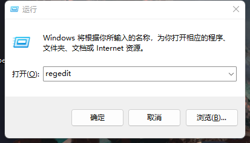
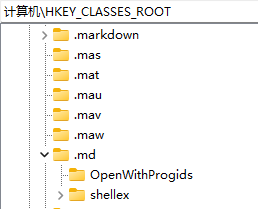
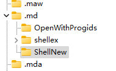
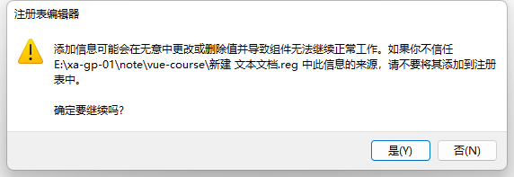
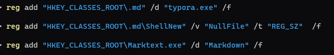
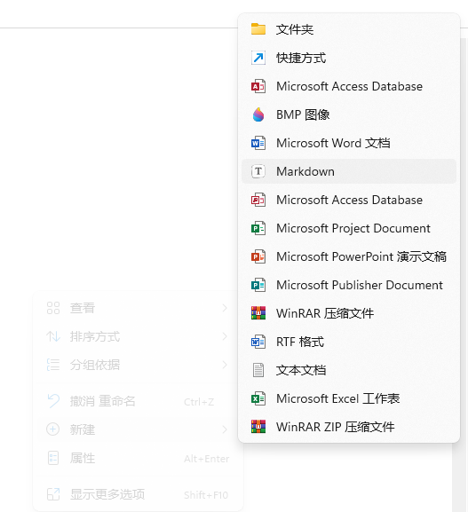

# 在新建笔记的时候，我们都会用到 md 文件，但是 windows11 自带的新建文件夹下面没有新建 md 文件这一选项，让我们很苦恼，怎么办呢？下面就一起来看看吧
# 第一种方法：修改注册表
# 一、win + R 输入【regedit】

# 二、定位路径 【计算机 \HKEY_CLASSES_ROOT.md】

# 三、右键.md 文件夹 => 新建 => 项，把新建的项命名为【ShellNew】

# 四、右键 ShellNew => 新建 => 字符串值，将该字符串值名称改为【NullFile】

如果没有生效，请尝试注销重启系统。
# 二、注册表导入
我们可以新建文本文文档，将以下命名复制进去，将 txt 后缀名改为 reg 格式，直接双击 reg 文件进行注册表导入。
Windows Registry Editor Version 5.00 | |
[HKEY_CLASSES_ROOT\.md] | |
@="Marktext.exe" | |
[HKEY_CLASSES_ROOT\.md\ShellNew] | |
"NullFile"="" | |
[HKEY_CLASSES_ROOT\Marktext.exe] | |
@="Markdown" |

# 三、通过 Reg 注册表命令添加
更深入一些，我们也可以通过 reg 注册表命令来进行修改。
必须以管理员权限启动 CMD 窗口，输如下命令。
reg add "HKEY_CLASSES_ROOT\.md" /d "Marktext.exe" /f | |
reg add "HKEY_CLASSES_ROOT\.md\ShellNew" /v "NullFile" /t "REG_SZ" /f | |
reg add "HKEY_CLASSES_ROOT\Marktext.exe" /d "Markdown" /f |

# 最终我们发现可以在右键菜单下有了这个选项
